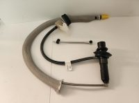
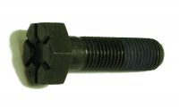
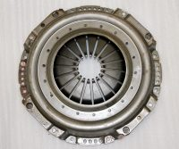
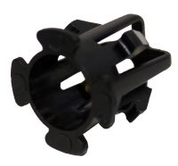
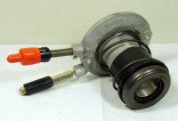
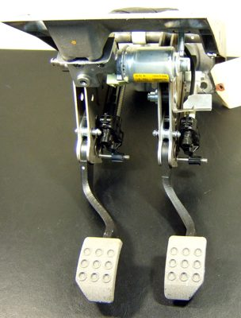
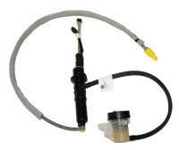
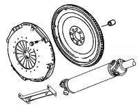
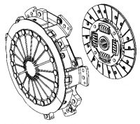

Clutch
21 parts
1992 - 1996 Dodge Viper Brake or Clutch Pedal Pad - 04723478
Part # 04723478
$60.00

1992 - 1997 Dodge Viper Clutch Starter Interlock Switch - 53007944
Part # 53007944
$254.00

1992 - 2002 Dodge Viper Pedal Adjustment Knob - 04897163AA
Part # 04897163AA
$55.00

1992 - 2002 Dodge Viper RT/10 GTS Clutch Actuator - 04642666 / 4642666AB - 68437475AA
Part # 04642666
$450.00

Out of stock1992 - 2005 Dodge Viper Flywheel Mounting Bolt - 06035811
Part # 6035811
$19.00
 Out of stock
Out of stock1992 - 2006 Dodge Viper Clutch Kit w/Plate - 04848708AF
Part # 4848708AF
$660.00

Out of stock1992 - 2006 Dodge Viper Clutch Kit w/Plate w/Overnight Shipping from Mopar - 04848708AF
Part # 04848708AF
$534.00

1992 - 2010 Dodge Viper Clutch Slave Cylinder - 05037357AB
Part # 05037357AB
$369.00

1992 - 2010 Dodge Viper Pilot Bearing - 53009181AB
Part # 53009181AB
$52.00

Out of stock1992 - 2010 Dodge Viper Self-Retaining Clutch Actuator Bushing - 04643448
Part # 04643448
$9.99
 Out of stock
Out of stock1992-2002 Dodge Viper Flywheel - 04643416AB
Part # 04643416AB
$580.00

1992-2010 Viper SRT10 Clutch Slave Cylinder 05037357AA 0537357AB
Part # 05037357AA 05037357AB
$369.00

1998 - 2010 Dodge Viper Clutch Starter Interlock Switch - 53007944AB
Part # 53007944AB
$160.00

2003 - 2006 Dodge Viper SRT10 Brake Clutch Pedal Assembly - 05290890AG
Part # 05290890AG
$650.00

2003 - 2006 Dodge Viper SRT10 Lightweight Flywheel - P4510169
Part # P4510169
$810.00

2003 - 2013 Dodge Viper SRT10 Clutch Actuator - 04642666AF - 04642666AH
Part # 04642666AF
$300.00

2004 - 2006 Dodge Viper 2010 - 2014 Transmission Conversion Kit
Part # 6060 conversion kit
$1,150.00

2008 - 2010 Dodge Viper SRT10 Brake Clutch Gas Pedal Assembly - 05290926AD
Part # 05290926AD
$2,000.00

2008 - 2010 Dodge Viper SRT10 Clutch Kit w/Plate - 05037963AC
Part # 05037963AC
$440.00

2008 - 2010 Viper Flywheel Including Ring Gear - 05037965AB
Part # 05037965AB
$405.00

1992 - 2002 Dodge Viper RT/10 GTS Clutch Actuator - 04642666AB - 68437475AA
Part # 04642666AB 4642666
$450.00